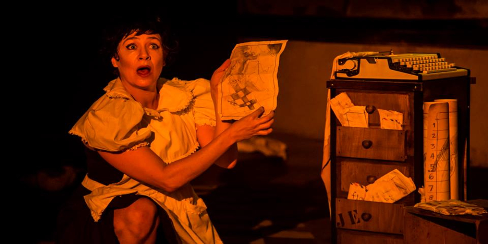

Artes & Procesos Comunitarios
De formación psicóloga comunitaria y directora de psicodrama. De oficio investigadora social, actriz, titiritera y escribidora. Postgrado en Gestión de Servicios Sociales – Universidad Complutense de Madrid y Post Bachelor Programme in Relation and Networks - Universidad de Tromso.
Desde el año 2004 diseña y conduce proyectos sociales donde combina arte, creatividad y fortalecimiento de lazos comunitarios, junto a organizaciones no gubernamentales y movimientos sociales.

Entre 2005 y 2012 formó parte de la compañía de teatro espontáneo Kusuví, dirigida por Lirio Obando, con quienes realizó intervenciones en calle, plazas y escuelas públicas abordando problemáticas sociales con este dispositivo participativo.

A partir del año 2009 viene desarrollando intervenciones de teatro en calle y sitios de tortura en época de la dictadura “Arte por la memoria” junto a Servicio Paz y Justicia Paraguay (SERPAJ PY).

Entre 2008 y 2014 formó parte de la compañía Hara Teatro, dirigida por Wal Mayans, con quienes realizó 7 años de laboratorio de teatro antropológico y participó en calidad de actriz en giras con obras de teatro por Curitiba, Fortaleza (Brasil), Córdoba (Argentina), Fara Sabina (Italia) y Shangai (China).

Desde el año 2009 y actualmente forma parte de la compañía Kunu´u Tïteres, junto a Carola Mazzotti. En el año 2015 estrenó en Berlín su primer Solo “Bellmerides” con la dirección de Marisol Salinas (El Salvador) y la asistencia artística de Birgitt Asshoff (Berlin). Desde mayo de 2019 reside en Islandia donde ha realizado shows de Teatro Lambe Lambe y un taller de teatro físico para estudiantes secundarios llamado “Stories with bodies”.

Algunos Trabajos entre 2015 y 2018:

Especialista de Arte en Proyecto prevención de la violencia e inserción social. Ejecutado en barrio San Carlos de la ciudad de Luque con financiación del BID y ejecutada por la Fundación CIRD. De marzo a diciembre 2018.

Unipersonal dirigido por Raquel Martínez « Remedios Varo, un alma surrealista » en ciclo de teatro hispanoamericano del centro cultural español Juan de Salazar. Diciembre 2018.
Niña Pájaro. Un tributo a Alejandra Pizarnik », obra que combina teatro y manipulación de objetos. Coproducción Kunu´u Títeres y Teatro Miniatura Paraguay. Se estrenó en setiembre y giró por Posadas y Resistencia – Argentina en el año 2016. En el año 2017 se presentó en el Centro Cultural Paraguayo Americano (CCPA).
LINKS:

Gira nacional (Asunción, Encarnación, Pilar, Ciudad del Este) e internacional (Buenos Aires / Curitiba) con la obra « Muñequita Rota », sobre mandatos sociales y sus efectos en los cuerpos. Junto a las artistas Ana Brisa Caballero y Marisol Salinas. De junio a noviembre 2015.
Libros de cuentos editados:
Link a Facebook Niña Pajaro Titulo de la Obra: Niña Pájaro